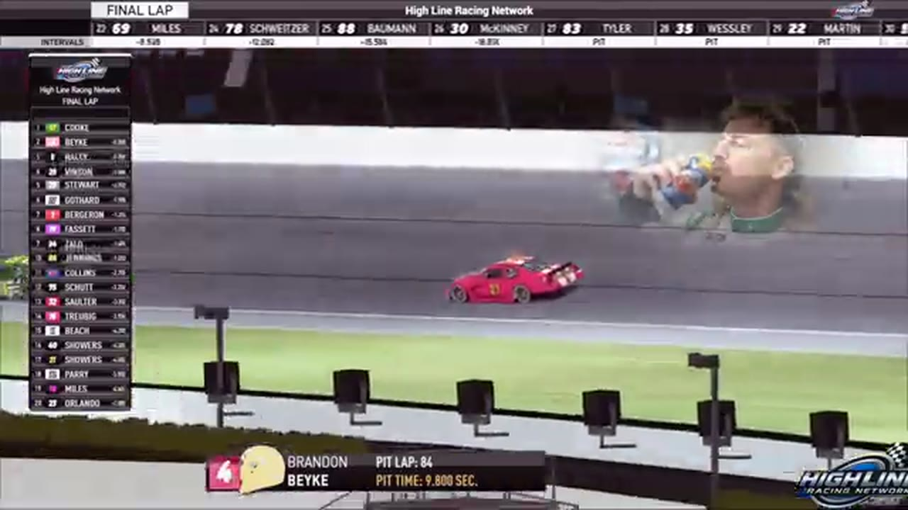

Cook Takes Kansas from Haley
Trevor Haley swept the stage points and reached the championship lead, but Cory Cook made the pass that delivered his first HLRN win.

Cory Cook won Kansas by taking the feature from the driver who was taking control of the championship. Trevor Haley owned the supported stage story and left the night as HLRN’s points leader according to the companion standings. Cook owned the final pass. Brandon Bikey followed him home in second, and Haley finished third. The result separated two accomplishments that Season 1 had been steadily pulling apart: accumulating enough points to lead and executing the move that ends a race.
Haley’s opening stage continued the pattern that had made him central even without a supported feature win. He carried the No. 12 through Turn 4 for the checkpoint and remained the focus of the second-stage points discussion. The complete surrounding classifications are missing, but the repeated calls establish the important competitive fact: Kansas was adding to Haley’s title case before Cook became the winner.
The feature did not preserve that stability. Eli Zallo and Jerry Bergeron appeared in an early caution replay, followed by another sequence involving Evan Perry and Zallo. A slowdown by John Miles later triggered a restart wreck, and Ryan Wilson became part of the next caution review. The repeated resets turned Haley’s accumulated track position into something he had to defend over and over.
When the race returned to green, every shortened run increased the value of the front row. Bikey and Haley eventually brought the field back for one of the late formations, putting the eventual P2 and P3 drivers together before Cook had made the decisive move. Another caution forced Kansas to rebuild its overtime order, removing whatever advantage had survived the previous launch.
The overtime reset changed the race from an accumulation test into a launch test. Haley’s stage work and points position could not create separation once the field was placed beside him again. Bikey had the immediate lane needed to challenge, while Cook could choose his approach from the next row and watch where the front pair lost momentum. Every earlier caution had taken laps away; this one concentrated the feature into the smallest remaining window.
Cook’s opportunity developed because he stayed connected while the leaders were forced to defend one another. A move that began as a challenge to Haley also opened the route Bikey used to advance. The two cars did not need identical outcomes for their runs to be related: Cook cleared the points leader for P1, and Bikey followed the changing order into P2. Haley’s recovery to third preserved the value of his night, but the final sprint no longer belonged to the driver who had controlled the formal checkpoints.
Cook entered the final sprint with a route to the front and Bikey close enough to follow. Haley still represented the benchmark: pass the points leader and the feature was available. Cook worked around him during the deciding run. The pass changed more than the leader; it changed which organization would receive the first supported winner in CCH history.
Bikey stayed with the move and secured second. Haley recovered enough to hold the final podium position, a result confirmed by the primary output and his post-race interview. The accepted top three is therefore Cook, Bikey, Haley. The order behind them remains open, but nothing beyond third is needed to explain how the race turned.
The post-race desk returned to contact involving Cook and Bikey, then gave Cook the winner’s booth to explain his side. Those segments add perspective without altering the positional record. Cook’s first HLRN victory is supported by the finish and the result read; Bikey’s runner-up result stands beside it; Haley’s P3 remains separate from the points note that put him atop the season.
Kansas is the race that makes Haley’s championship route legible. A win was not required for him to lead if stages and consistent finishes kept adding value. Cook, meanwhile, demonstrated the opposite kind of achievement: a single closing sequence capable of producing a first feature win even when another driver had owned the earlier checkpoints. Treating either accomplishment as the whole night would flatten what made the event matter.
The three ledgers came apart cleanly at Kansas. Haley owned the supported stage and the channel’s standings checkpoint. Cook owned the feature and the first CCH victory. Bikey owned the position between them at the finish. Because the full points table has not been supplied, Central cannot calculate exactly how much each result changed the championship. It can still show why the race mattered: the title leader added value, a new winner changed the feature record, and a runner-up helped produce the pass that separated those outcomes.
Cook left with the checkered receipt. Haley left with the standings checkpoint. Bikey left with the move that carried him to P2. Kansas held all three stories at once, and that is why its result became more than another first-time winner. The race showed HLRN’s championship and race ledgers operating in parallel—sometimes rewarding the same driver, and here rewarding different ones.
Receipts behind the report
These links open the exact HLRN source windows used by the editorial file.
- OPENING · STAGE
Haley takes Stage 1 at Kansas
Trevor Haley carries the Darkhorse No. 12 through Turn 4 for the opening stage result.
▶ 1:10 SOURCE WINDOW - MIDDLE · STAGE
Another stage keeps Haley atop the points fight
The second-stage sequence again centers Haley and the bonus points that move him toward the lead.
▶ 2:02 SOURCE WINDOW - CLOSING · FINISH
Cook makes the decisive Kansas pass
Cory Cook works around Trevor Haley and reaches the checkered with Brandon Bikey behind him.
▶ 4:52 SOURCE WINDOW - CLOSING · RESULT
CCH records its first Highline winner
The HLRN companion confirms Cook's first league victory and Bikey in second.
▶ 5:10 SOURCE WINDOW
The result supports Cook P1, Bikey P2, and Haley P3; the order beyond them remains open. Stage 2 language is preserved as companion context rather than a separate official result table.